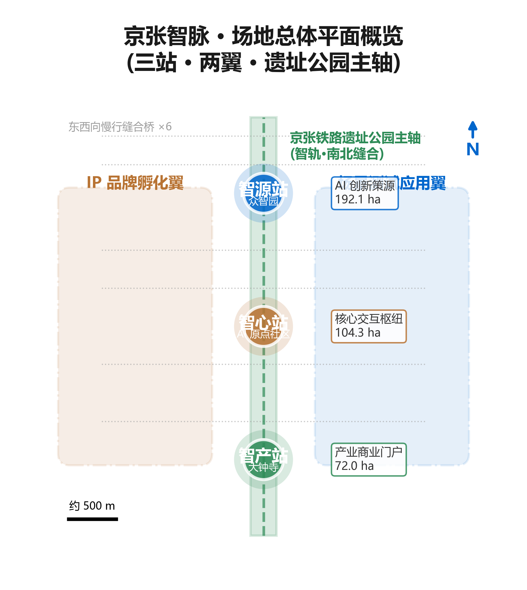
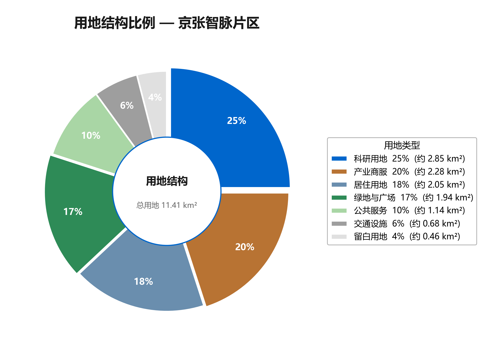
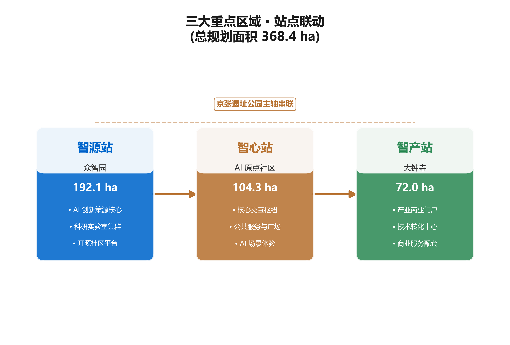
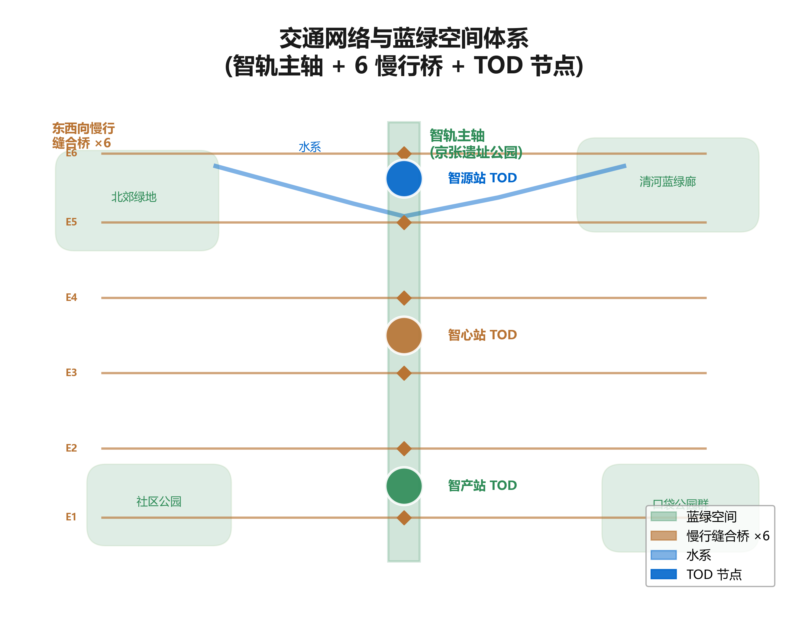
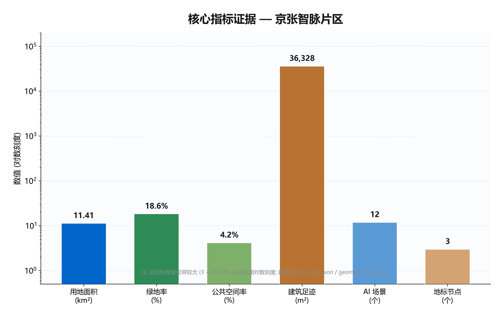

京张智脉·百年新轨
将京张铁路'铁轨'转化为'智轨'，以一轨三站两翼的空间结构，构建连接百年创新精神的AI城市走廊。
京张智脉·百年新轨
Jingzhang Intelligence Vein · Centennial New Track（JZ-AIV）
1. 设计依据与资料清单
本方案以北京市规划和自然资源委员会海淀分局发布的《百年京张AI创新带城市设计国际方案征集资格预审公告》为第一法定依据，以面向智能体的开源征集任务书为第二依据，以 brief/site-package/ 中由维护者登记的临时粗略边界、重点区域、枚举、指标和来源清单为机器可读依据 来源 来源。方案不是独立愿景文本，而是从公告、任务书和场地资料出发组织的可复核成果；本节只把最关键依据放在判断旁边，完整来源和标准覆盖分别保存在 sources.json、standard_matrix.json 与 design_depth_matrix.json，不在正文重复机器索引 深度。
资料登记表的使用边界由 data/source_registry.json 统一约束 来源：当前登记摘要为 formal 可用资料 5 条、背景资料 0 条、provisional-only 资料 1 条。其中，公告与任务书为 formal-ready 资料，可直接用于设计判断；provisional-only 资料仅作为背景与方向性参考，不得升级为 official boundary、法定控规或政府实施承诺。data/processed/agent_fact_pack.md 是阅读导航层而非新的权威来源 来源，它帮助 agent 把三层范围、三处重点区、公告任务与 agent.1-agent.6 组织成可读方案；事实判断仍需回到已登记的原始材料。
资料等级说明：formal-ready 资料包括资格预审公告、面向智能体任务书、国土空间用地分类指南、城市设计管理办法、控规编制审批办法五项公开政策与标准，可直接支撑设计判断 来源 来源。provisional 资料为 brief/site-package/geometry/provisional_boundaries.geojson，目前用于方案生成、自检、可视化和设计讨论，限制为：不能作为 official redline、审批依据、精确面积依据或法定控制结论。该组织方数据缺口本身不阻断内容评分；替换 official polygons 后，site boundary、key areas、land use、roads、green space、public space、buildings、phasing 和 metrics 均需重算。

资料缺口：当前仍缺 official site boundary、official key area polygons、控规条件、现状建筑权属、道路红线、市政管线、文保边界和公共服务设施数据。这些缺口已写入 missing_data_checklist.csv 与 assumptions.json，正文相关结论均降级为"概念建议""参考方案""可供专业团队深化研究"，不得伪装为审定结论。
2. 三层范围工作框架
方案按照公告确定的三个层次组织工作，三层范围逐级落实、相互校核，而非互相割裂的图纸集合 标准。统筹研究范围决定产业链和城市形态判断，总体设计范围把判断落实到更新项目、空间结构和设施承载，重点区域范围验证具体地块、建筑、交通、公共空间和AI应用场景的可实施性。
| 层级 | 面积 | 设计问题 | 方案回答 | 设计深度 | 数据落点 |
|---|---|---|---|---|---|
| 统筹研究范围 | 43.6 km² | AI产业生态和未来城市形态如何组织 | 建立"高校策源-开源协作-企业转化-公共体验-国际传播"创新链 | 战略研究 | compliance_matrix.json |
| 总体设计范围 | 11.4 km² | 产业空间、城市更新、交通市政和风貌如何落图 | 用地、建筑、道路、绿地、公共空间和分期图层共同表达 | 控规深度城市设计 | 空间数据、空间数据 |
| 重点区域范围 | 3.68 km² | 三处片区如何达到详细设计深度 | 分别提出定位、空间动作、AI场景和实施依赖 | 规划综合实施方案深度 | 空间数据、空间数据、空间数据 |
设计判断：三层范围的核心转译是"一轨三站·两翼展开"——一轨即京张遗址公园AI创新主轴南北贯通，三站即智源站（众智园·192.1ha·基础研究）、智心站（AI原点社区·104.3ha·创新生态）、智产站（大钟寺·72.0ha·产业应用），两翼即中关村IP翼（东·资本与知识产权赋能）和小月河场景翼（西·AI场景测试与城市生活）。这样判断的原因是：京张铁路的线性遗址空间天然适合作为创新主轴，三个重点区域分别对应创新链的"源头-心脏-出口"三段，两翼则分别回应资本赋能和场景测试两种横向需求。

provisional 边界说明：当前提交采用 brief/site-package/geometry/provisional_boundaries.geojson 生成的临时 formal 包，geometry/site_boundary.geojson 与 geometry/key_areas.geojson 均标注为 provisional_constraint、official_boundary=false。边界证据以 空间数据 与面积指标 指标 为准，但只能作为方向性设计依据。替换 official polygon 后，三层范围的面积、用地比例、建筑基底、绿地比例、公共空间比例和分期面积均需重新复算 深度 深度。
资料缺口：official site boundary 与 official key area polygons 尚未取得，所有面积数值均为 provisional 估算，待正式数据发布后复算。
3. 统筹研究范围产业与未来城市研究
本节回应公告 1.5（1）关于世界级AI创新生态体系、产业链协同、三区两翼、未来AI城市形态、AI文化/社会/城市、AI+交通和连续绿色空间体系的要求，并展开面向智能体任务书的 agent.1（总体概念与功能统筹）和 agent.2（AI全栈自主创新生态）两项必选任务 来源 标准。
3.1 命名体系与Logo方向（agent.1）
设计判断：方案命名为"京张智脉·百年新轨"（Jingzhang Intelligence Vein · Centennial New Track，缩写 JZ-AIV）。核心隐喻是将京张铁路的"铁轨"转化为"智轨"——一条连接过去与未来、工程与智能、文化与生活的AI创新走廊。1909年詹天佑主持修建的中国人自主设计的第一条干线铁路，其工程创新精神在2026年AI时代获得新的空间表达。
命名体系按"一轨三站两翼"组织：创新带总名为"京张智脉"（JZ-AIV），众智园为"智源站"（Source Station·AI创新源头·基础研究与算力），AI原点社区为"智心站"（Core Station·AI创新心脏·生态与社区），大钟寺为"智产站"（Market Station·AI创新出口·产业与商业），中关村翼为"IP翼"（知识产权与资本赋能），小月河翼为"场景翼"（AI场景测试与城市生活）。这样命名的原因是：三站对应创新链的"源头-心脏-出口"三段，名称既保留京张铁路的"站"意象，又赋予AI语义；两翼名称直接表达功能，便于公众理解和国际传播。
Logo设计方向是将汉字"轨"与电路板线路图形融合：横线既是铁轨又是数据总线，竖线既是枕木又是芯片引脚。主色为京张铜色 #B87333（铁轨历史质感），辅色为AI蓝 #0066CC（科技创新），点缀色为生态绿 #2E8B57（公园与可持续）。Logo与命名共同服务于"百年京张文化带、都市AI生活体验带、AI融合创新带"三大定位的整体辨识度，并回应"AI全栈自主创新体系、世界级AI创新生态、AI+场景赋能新范式、智能化AI活力城市、AI治理全球话语权"五大功能。
对应图层与标准：命名和Logo属于品牌识别层，不直接对应GeoJSON，但服务于公共空间节点 空间数据 和朝圣地标的视觉系统统筹，受 标准 的城市风貌统筹约束。资料缺口：Logo和品牌标识需另行清权，不得使用未授权字体、商标或人物肖像。
3.2 三区两翼协同回路（agent.1）
三区两翼不是静态分区，而是一条"基础研究-创新生态-产业应用"的协同回路：智源站产出算法、模型和算力，经智轨主轴输送至智心站进行开源协作、成果孵化和人才转化，再由智产站进行商业化、企业加速和国际路演；两翼分别从资本（IP翼）和场景（场景翼）两个方向为回路注入资源与反馈。回路通过智轨主轴的三层功能实现空间缝合：地表层为慢行与公共空间（步道、骑行道、运动场、AI交互装置），节点层为每300-500米一个AI场景节点（开源展示廊、开发者散步道、AI艺术装置），连接层为6-8条东西向慢行桥和地下通道缝合两侧。
对应图层：三区引用 空间数据、空间数据、空间数据；两翼中的小月河场景翼引用 空间数据，中关村IP翼因涉及资本服务，主要落在产业商业用地 空间数据。资料缺口：两翼的具体边界和用地比例待控规确认。
3.3 全球AI创新生态案例（agent.2）
方案梳理7个全球AI创新生态案例，提炼可转化为空间、运营和场景机制的经验：
| 案例 | 核心特征 | 可借鉴经验 | 对应区域 |
|---|---|---|---|
| 硅谷沙丘路 | 资本驱动+校区溢出 | 风险投资密集度；大学周边孵化器 | 智心站+IP翼 |
| 波士顿Kendall Square | 校区-产业-城市一体 | MIT周边混合用地；公共空间促交流 | 智源站 |
| 深圳南山科技园 | 速度+规模+产业链 | 快速迭代文化；全链条 | 智产站 |
| 东京涩谷 | 科技嵌入城市生活 | AI/IT企业商业街区混合布局 | 智产站 |
| 阿姆斯特丹AI园区 | 水城+创新 | 蓝绿空间与创新融合 | 小月河场景翼 |
| 上海张江 | 产业+研究并行 | 国家实验室+企业总部+居住三元结构 | 智源站+智心站 |
| 新加坡One-North | 多元生态+政府引导 | 政府搭建测试平台；国际人才社区 | 智心站 |
这些案例的共性经验可凝练为五条空间机制：一是大学周边混合用地促进校区溢出（智源站、智心站），二是公共空间作为非正式交流载体（智轨主轴），三是测试平台由政府或平台搭建降低创新门槛（小月河场景翼），四是商业街区承载科技生活体验（智产站），五是国际人才社区配套留住人才（智心站）。要素保障机制包括土地与空间（研究簇群混合用地、弹性空间预留、工业上楼试点）、资金（政府引导基金+市场VC+企业研发投入三层结构）、人才（国际人才社区、子女教育配套、开发者荣誉体系）、算力（分布式公共算力平台、端侧算力网络、绿色能源配套）、数据（公共数据开放目录、数据合规审查、隐私计算基础设施）、场景（季度场景征集、测试验证专区、场景开放运营机制）。
对应标准：案例研究属于战略研究层，受 标准 约束，不构成法定规划。资料缺口：案例数据为公开信息整理，具体借鉴机制需结合本地条件深化研究。
3.4 未来城市形态研究
未来城市形态研究回答AI如何改变工作、生活、社交、学习、交通和公共服务。方案把AI交通系统、连续绿色空间、创新服务设施和国际化生活工作氛围落实为可定位的功能区、节点、廊道和场景：智轨主轴承载慢行与AI交互，三站承载研究-孵化-产业三类工作场景，两翼承载资本和场景两类赋能，蓝绿网络承载运动休闲与科技测试。这些判断落到 空间数据、空间数据 与 深度。资料缺口：未来城市形态的绩效指标（AI创新指数、人才密度、产业服务满意度）需运营数据持续校准。
4. 总体设计范围城市更新与控规深度城市设计
本节回应公告 1.5（2）关于产业目标、功能布局、创新指标体系、城市更新总体框架、更新项目清单、实施政策、建筑总规模、交通轨道、市政配套、京张遗址公园活力带和城市风貌的要求，达到控制性详细规划的城市设计深度 标准。
4.1 用地结构
设计判断：总体设计范围的用地结构按"科研25%/产业商业20%/居住18%/绿地17%/公共10%/交通6%/预留4%"的概念比例组织。这样判断的原因是：科研用地占比最高，回应AI全栈自主创新体系对研究簇群和算力中枢的空间需求；产业商业用地支撑企业加速器、展示中心和智能商业街区；居住用地保障人才社区和国际公寓；绿地以京张遗址公园为主轴；公共空间承载广场、第三空间和文化节点；交通市政用地保障接驳和设施；预留弹性用地回应未来AI新业态的不确定性。
用地分类依据 标准，用地结构证据以 空间数据 为准，绿地比例由 指标 复核。待确认事项：上述比例为概念建议，所有控规指标标注"待确认"，待正式控规条件发布后校准；不得以推测值冒充审定指标 深度 深度。
4.2 拆改留策略
设计判断：拆改留遵循"保留改造优先、老旧空间激活、弹性预留、工业上楼试点"四项原则。具体而言，老旧商业和工业空间优先改造为AI创新空间（智产站周边、智心站近校界面）；保留具有历史文化和空间价值的建筑（清华园站遗址、铁轨遗迹）；新建项目集中在研究簇群和算力中枢（智源站）；工业上楼试点在智产站周边探索垂直产业空间。拆改留方法由 深度 管理，建筑基底证据以 空间数据 和 指标 为准。待确认事项：具体地块的保留/改造/拆除/新建分类需现状建筑、权属和工程条件确认，当前只能提出方法框架，不得编造具体拆改留结论。
4.3 城市更新总体框架
城市更新总体框架以"一轨串联、三站锚固、两翼展开"为空间结构，以"近校缝合、临河激活、站点一体化"为更新策略。智心站近校区域通过慢行缝合校区与园区，补足成果发布、人才服务和居住生活配套；智源站临清河界面通过蓝绿空间激活产业展示和低碳创新交往；智产站围绕大钟寺站一体化组织商业、办公和公共服务。涉及建筑高度、开发强度、道路红线、退线和设施标准的内容，若尚无官方控制条件，均写为"待正式控规条件确认" 标准。资料缺口：控规条件、现状建筑、权属和工程条件均待确认。
5. 重点区域详细设计
本节对众智园（智源站）、北京AI原点社区（智心站）、大钟寺（智产站）三处重点区域分别开展详细设计，达到规划综合实施方案的城市设计深度 深度。三处重点区域必须引用 空间数据、空间数据、空间数据。

5.1 智源站 — 众智园AI自主创新加速区
定位：AI全栈自主创新体系的技术源头，面积约192.1ha，对应基础研究、算力和源头创新。
空间结构：组织3-4个研究簇群（大模型、具身智能、AI for Science），在片区中心布局分布式算力中枢，沿遗址公园北段设置"研究者散步道"作为交流绿廊，并预留自动驾驶接驳测试段连接智源站与智心站。建筑更新：以新建研究簇群为主，保留清华园站遗址和铁轨遗迹作为文化锚点，算力中枢采用低碳绿色建筑方向。交通慢行：强化清河界面和对外交通组织，研究者散步道串联研究簇群，自动驾驶接驳测试段作为智轨主轴的北段试点。公共空间：以绿色空间承载开放测试与标准治理展示，清河低碳创新廊作为园区公共客厅。AI场景：AI+科研辅助、算力共享平台、开源模型孵化器、AI for Science实验室。实施风险：算力设施能耗与绿色能源配套、研究簇群用地权属、清河蓝线和防洪条件均待确认 空间数据。
5.2 智心站 — 北京AI原点社区
定位：世界级AI创新生态的心脏，整个创新带的"客厅"，面积约104.3ha，对应开源协作、成果孵化和人才社区。
空间结构：以"开源广场"为中心组织公共空间网络，布局咖啡馆、共享办公、创客空间等第三空间网络，设置AI生活体验区（AI+医疗、AI+教育、AI+法律），东西向打通至小月河场景赋能翼。建筑更新：以保留改造为主，近校界面老旧空间改造为成果转化街和孵化空间，补足人才服务和居住生活配套。交通慢行：组织校区、园区、街区慢行缝合，强化轨道站点一体化。公共空间：开源广场为日常非正式交流载体，第三空间网络覆盖步行范围。AI场景：智能体贡献荣誉墙、开源成果展示廊、AI社区议事厅、AI+自适应学习空间。实施风险：近校区权属、首层业态、轨道站点一体化工程条件均待确认 空间数据。
5.3 智产站 — 大钟寺AI产业集聚区
定位：AI产业商业化出口，面积约72.0ha，对应企业加速、智能商业和国际路演。
空间结构：组织智能商业街区（无人零售、AI导购、虚拟试衣）、企业服务枢纽（AI企业加速器、合规服务中心、数据交易平台）、产业展示窗口（AI产业成果展示中心）和TOD综合体（整合商业、办公和公共服务）。建筑更新：以改造更新为主，老旧商业空间改造为智能商业街区和企业加速器，工业上楼试点探索垂直产业空间。交通慢行：围绕大钟寺站一体化组织TOD，四象限步行连通缝合路口。公共空间：重点企业周边公共环境更新，国际路演客厅作为商务接待空间。AI场景：AI+智慧商业体验、机器人配送走廊、AI+企业合规服务、智能原生消费场景。实施风险：大钟寺站一体化工程、路口四象限步行连通的市政管线、商业业态权属均待确认 空间数据。
provisional 说明：若重点区 polygon 为 provisional，上述结论只能作为方向性设计，待 official polygon 发布后复核。
6. AI 创新生态、人才画像与 AI+ 场景
本节展开 agent.3（AI+场景赋能新范式）必选任务，提供12张AI场景卡（含4张测试验证场景）和6类用户画像，并把每张场景卡映射到空间位置、服务对象、隐私边界和运营主体 来源。
6.1 六类用户画像
| 代号 | 画像 | 核心需求 | 空间响应 | 自检边界 |
|---|---|---|---|---|
| R | AI研究者 | 算力、交流、成果转化 | 智源站研究簇群、算力中枢、研究者散步道 | 算力和数据服务需另行授权 |
| E | 创业者 | 孵化空间、资本对接、场景测试 | 智心站孵化空间、IP翼资本服务、小月河场景翼测试场 | 企业标识须清权 |
| D | 开发者 | 第三空间、社区归属、技术交流 | 智心站开源广场、第三空间网络、夜间协作空间 | 不采集个人行为轨迹；活动数据只做聚合统计 |
| L | 居民 | 便利生活、AI公共服务、参与治理 | 社区服务嵌入、AI+社区医疗站、AI+社区议事厅 | 不将居民画像用于商业推荐 |
| S | 学生 | 学习空间、实践机会、社交场景 | 校区-园区慢行缝合、AI+自适应学习空间、实践基地 | 校园数据需授权 |
| V | 访客 | 文化导览、AI体验、公共活动 | 文化导览路线、AI朝圣地标、全球AI活动周路线 | 文化导览不采集面部数据 |
6.2 十二张AI场景卡
| ID | 名称 | 类型 | 空间位置 | 服务对象 | 隐私边界 | 运营主体 |
|---|---|---|---|---|---|---|
| SC-01 | AI轨道接驳 | 智慧交通 | 遗址公园沿线 | 全体用户 | 不采集人脸；客流数据聚合统计 | 交通运营平台 |
| SC-02 | 开源成果展示廊 | 公共文化 | 遗址公园沿线 | 开发者、访客 | 项目信息公开授权 | 开发者社区联合运营 |
| SC-03 | 智能体贡献荣誉墙 | 朝圣地标 | 智心站·开源广场 | 开发者、访客 | 贡献记录经本人授权 | 开发者社区联合运营 |
| SC-04 | AI+社区医疗站 | AI+医疗 | 社区级 | 居民 | 医疗数据最小化；人工复核 | 社区卫生机构 |
| SC-05 | AI+自适应学习空间 | AI+教育 | 智心站 | 学生 | 学习数据需授权；人工复核 | 教育机构 |
| SC-06 | AI+法律咨询亭 | AI+法律 | 社区级 | 居民 | 咨询内容保密；人工复核 | 法律服务机构 |
| SC-07 | 自动驾驶接驳测试段 | 测试验证 | 智源站至智心站 | 研究者、开发者 | 测试区域明确标识；居民可选择退出 | 测试平台运营 |
| SC-08 | 机器人配送试点区 | 测试验证 | 智产站周边 | 居民、访客 | 不采集人脸；配送数据脱敏 | 物流企业 |
| SC-09 | AI+公共安全感知 | 测试验证 | 公共空间 | 全体用户 | 不使用人脸识别为默认；人工复核 | 城市治理平台 |
| SC-10 | AI+碳中和监测 | 测试验证 | 全带分布式 | 全体用户 | 仅采集环境数据；不含个人信息 | 园区运营平台 |
| SC-11 | AI+智慧商业体验 | AI+商业 | 智产站 | 居民、访客 | 消费数据需授权；可退出 | 商业运营主体 |
| SC-12 | AI+社区议事厅 | 城市治理 | 社区级 | 居民 | 议事记录公开；个人意见匿名化 | 社区自治组织 |
6.3 场景-空间-运营映射与隐私边界
12张场景卡中，SC-07/SC-08/SC-09/SC-10为测试验证场景，必须在明确标识区域内进行，居民有权选择退出。公共空间场景引用 空间数据，慢行与交通场景引用 空间数据，开放空间场景引用 空间数据 和 指标、指标。
隐私与人工复核边界：不使用人脸识别作为公共空间默认感知方式；所有自动化决策保留人工复核通道；数据采集最小化原则，不收集非必要个人信息；测试验证场景必须在明确标识区域内进行，居民有权选择退出。城市智能体可以辅助识别慢行断点、公共空间热力、设施维护、企业服务需求和活动安全风险，但不能替代规划审批、不能输出未经授权的个人画像、不能声称获得官方实施承诺。资料缺口：场景运营数据、隐私合规审查机制和运营主体资质需另行确认 深度。
7. 用地、建筑规模与拆改留方案
设计判断：用地布局按第4.1节的概念比例组织，建筑基底区分保留、改造、更新、新建四类，建筑规模和强度指标与 metrics.json 和图层一致。用地分类依据 标准，建筑高度、体量、界面和风貌控制由 深度 管理，拆改留方法由 深度 管理。用地和建筑的主要证据是 空间数据、空间数据 和 指标。
建筑策略：混合用地为主，避免单一功能分区；保留改造优先，老旧商业和工业空间改造为AI创新空间；弹性空间预留，避免过度固化；工业上楼试点（智产站周边）。建筑规模若总建筑规模、容积率、建筑高度、建筑密度、绿地率、退线和建筑控制线缺少官方条件，应在指标体系中列为 unknown 或 pending_control，不得用固定数值制造精确感 深度。
待确认事项：所有面积和比例标注"待控规确认"。缺现状建筑、权属、控规和工程条件时，方案只能提出方法和待校准清单，不能编造拆改留结论。资料缺口：现状建筑基底、权属、控规条件、建筑高度、容积率、退线和建筑控制线均待确认。
8. 交通、轨道、市政与公共服务设施
设计判断：交通方案以"智轨接驳系统、轨道一体化、慢行网络、停车策略、无人配送"五位一体组织。智轨接驳系统沿遗址公园设置AI自动驾驶接驳线，连接三站；轨道一体化强化西二旗、知春路、大钟寺等TOD开发；慢行网络以遗址公园为主轴，6-8条东西向慢行桥缝合两侧；停车策略减少路面停车，建设地下和立体停车；无人配送在智产站周边划定机器人配送专用通道。
这样判断的原因是：京张遗址公园的线性空间天然适合作为慢行主轴和自动驾驶接驳线载体；东西向慢行桥回应两侧校区、园区和社区的缝合需求；TOD开发回应轨道站点一体化的高密度需求；无人配送回应智产站的智能商业场景。交通和市政专业深度分别由 深度 与 深度 约束；图层证据引用 空间数据、空间数据。

市政与公共服务设施：覆盖AI产业服务设施、创新服务平台、人才生活服务设施、新型基础设施、分布式能源、端侧算力和传统市政设施融合。设施标准、空间布局、服务半径、运营模式和分期实施逻辑需说明；缺少管线、能源、排水、防洪、消防等工程资料时，列为正式深化前置条件。待确认事项：道路红线、管线、消防和市政条件缺失时，通过 assumptions 说明待补，不写成审定条件 空间数据。资料缺口：道路红线、市政管线、消防和工程条件均待确认。
9. 蓝绿空间、公共空间与城市风貌
本节展开 agent.4（AI公共空间与朝圣地标）必选任务，提出京张遗址公园活力带、小月河蓝绿空间和3个AI朝圣地标。
9.1 蓝绿空间网络
设计判断：蓝绿空间以京张遗址公园活力带为骨架，统筹清河、小月河、周边高校、企业、社区出行需求，提出南北贯通、东西连通的步道、骑行道和绿色空间体系。识别慢行断点、上跨环路节点、公园南端和北端景观节点，提出停车、体育、创新交往、科技测试、应用展示和公共服务复合利用策略。小月河场景翼作为AI场景测试与城市生活的蓝绿空间载体，清河低碳创新廊作为智源站的临河界面。
蓝绿公共空间由设计深度项和绿地、公共空间图层共同校核 深度 空间数据 空间数据。绿地与公共空间比例在正文解释设计意义，完整复算保存在 metrics.json。资料缺口：河道蓝线、生态和防洪条件待确认。
9.2 三个AI朝圣地标（agent.4）
设计判断：提出3个AI朝圣地标，分别落在三站，形成"源头-心脏-出口"的荣誉展示轴线：
| 序号 | 名称 | 位置 | 概念 |
|---|---|---|---|
| 01 | "百年轨"纪念装置 | 智源站北端（清华园站遗址附近） | 铁轨片段与电路板线路融合，NFC交互，呼应1909工程创新与2026AI创新 |
| 02 | 智能体荣誉墙 | 智心站·开源广场 | 活体墙面，实时展示AI agent贡献，电子墨水屏+实体铭牌，年度铭刻 |
| 03 | "开源灯塔" | 智产站南端 | LED光阵代码瀑布，塔基设开发者交流空间，照亮产业出口 |
三个地标与京张遗址公园、中关村创新文化、开发者社区和公共空间系统的关系是：百年轨回应京张铁路文化，荣誉塔回应AI新文化，开源灯塔回应开源共创精神，三者沿智轨主轴串联，形成可步行、可传播的朝圣路线。
荣誉展示体系包括四层：智能体贡献荣誉墙（实时更新+年度铭刻）、人工智能里程碑（沿遗址公园设置AI发展里程碑节点）、开源成果展示节点（定期轮换展示优秀开源项目）、全球开发者荣誉墙（年度评选杰出开发者）。待确认事项：地标、导视、Logo、字体、图像、人物和企业标识必须清权，不得过度娱乐化或把概念地标写成已批准建设 标准。资料缺口：地标设计需文保和控规依据，当前为概念建议。
9.3 城市风貌控制方向
城市风貌方案融合京张铁路历史文化、中关村创新文化和AI创新文化三文化层叠：1909京张铁路文化（自力更生、工程报国，空间载体为清华园站遗址、铁轨遗迹）、1980s中关村创新文化（改革破冰、科技报国，空间载体为中关村大街、创业故事节点）、2020s AI新文化（开源共创、智能向善，空间载体为开源广场、荣誉墙、开发者社区）。利用清华园火车站、北影等文化资源，提出城市基调、建筑风貌、屋顶形态、体量、界面和公共艺术引导方向。风貌控制分清官方管控、设计建议和待确认条件，严禁在没有文保或控规依据时给出伪精确控制线。资料缺口：文保边界、控规风貌条件待确认。
10. 更新项目清单、实施政策与分期计划
本节展开 agent.6（全球活动与长期运营）必选任务，提出更新项目清单、年度活动体系、开发者社区运营和品牌IP。
10.1 更新项目清单
| 项目编号 | 项目名称 | 类型 | 空间位置 | 主要依赖 | 证据引用 |
|---|---|---|---|---|---|
| JZ-01 | 京张遗址公园慢行断点缝合 | 公共空间/交通 | 遗址公园沿线 | 道路红线、桥下空间、交通组织复核 | 空间数据 |
| JZ-02 | 众智园清河创新界面 | 蓝绿空间/产业展示 | 智源站临清河 | 河道蓝线、生态和防洪条件 | 空间数据 |
| JZ-03 | 原点社区近校成果转化街 | 城市更新/产业服务 | 智心站近校 | 校区边界、权属、首层业态 | 空间数据 |
| JZ-04 | 大钟寺站四象限步行连通 | 轨道一体化/慢行 | 智产站 | 轨道站点、道路交叉口、市政管线 | 空间数据 |
| JZ-05 | AI公共服务与端侧算力节点 | 新基建/公共服务 | 全带分布式 | 能源、算力、安全和运营主体 | 空间数据 |
| JZ-06 | 全球AI活动周公共路线 | 运营/品牌 | 一带公共空间系统 | 公共空间许可、活动安全、版权清权 | 空间数据 |
10.2 年度活动体系（agent.6）
设计判断：提出4大年度活动，形成"春开源、夏场景、秋旗舰、冬荣誉"的节奏：
| 时间 | 活动 | 定位 | 空间 |
|---|---|---|---|
| 3月 | 开源贡献者大会 | 全球开发者年度聚会 | 智心站·开源广场 |
| 6月 | AI场景开放周 | 场景征集+测试验证展示 | 小月河场景翼 |
| 9月 | 京张AI创新节 | 年度旗舰活动·文化+科技+产业 | 全带联动 |
| 12月 | 智能体年度盛典 | 荣誉墙铭刻+年度贡献评选 | 智心站·荣誉墙 |
10.3 开发者社区运营与品牌IP（agent.6）
开发者社区运营机制包括四项：开源贡献积分制（基于代码提交、文档贡献积累积分，兑换算力、办公空间）、场景共建实验室（季度滚动征集AI场景方案，入选方案获测试空间和数据支持）、人才转化通道（优秀开发者对接企业、高校和投资机构）、国际传播网络（与全球AI城市缔结伙伴关系）。
品牌IP体系以"京张智脉"主品牌衍生子品牌：智源Talk（学术分享）、智心Hack（黑客松）、智产Demo（产品展示）、智轨Walk（文化导览）。
项目清单和分期深度由 深度 与 深度 管理，分期空间证据为 空间数据。待确认事项：所有活动、招商、资金、政策和运营安排表述为"概念建议"或"深化方向"，不得表述为已确定政府安排。如果没有权属、资金、实施主体和审批路径，方案必须把它写成实施风险，而不是承诺落地。资料缺口：实施主体、资金路径、审批条件均待确认。
10.4 分期计划
| 阶段 | 时间 | 重点 | 关键项目 |
|---|---|---|---|
| 近期 | 1-3年 | 智心站先行 | 开源广场、智能体荣誉墙、AI社区医疗站、慢行桥2-3座 |
| 中期 | 3-5年 | 智源站+智产站 | 研究簇群改造、算力中枢、智能商业街区、自动驾驶测试段 |
| 远期 | 5-10年 | 两翼展开+全带联动 | 开源灯塔、IP翼服务枢纽、小月河场景走廊、年度活动体系成熟 |
分期应与100天征集设计周期形成区分：征集周期是提交成果的时间要求，实施分期是城市更新和项目建设的推进路径。方案标明哪些内容可先以轻量设施、运营活动和服务平台启动，哪些必须等待正式控规、市政、交通和权属条件确认。
11. 指标体系、面积复算与合规矩阵
11.1 核心指标体系
指标体系分为三类：第一类是可由提交几何直接复算的空间指标（边界面积、绿地比例、公共空间比例、建筑基底面积和分期面积）；第二类是需要官方控规或任务书附件支撑的管控指标（容积率、建筑高度、建筑密度、退线、道路红线和设施标准）；第三类是需要运营或产业数据持续校准的绩效指标（AI创新指数、人才密度、产业服务满意度、慢行可达性、活动参与度和场景使用频次）。
| 指标 | 公式/来源 | 类别 | 复算结果 | 状态 |
|---|---|---|---|---|
| 总体设计范围面积 | site_boundary.geojson 面积 | 空间指标 | 11.4 km²（provisional） | 待official polygon复算 指标 |
| 重点区域面积 | key_areas.geojson 三片区面积和 | 空间指标 | 3.68 km²（provisional） | 待official polygon复算 空间数据 |
| 绿地比例 | green_space.geojson / site_boundary | 空间指标 | 17%（概念建议） | 待控规确认 指标 |
| 公共空间比例 | public_space.geojson / site_boundary | 空间指标 | 10%（概念建议） | 待控规确认 指标 |
| 建筑基底面积 | buildings.geojson 面积和 | 空间指标 | 待复算 | 待现状建筑确认 指标 |
| AI场景节点数 | 场景卡计数 | 绩效指标 | 12 | 已确认 指标 |
| 朝圣地标数 | 地标计数 | 绩效指标 | 3 | 已确认 指标 |
| 更新项目数 | 项目清单计数 | 空间指标 | 6 | 概念建议 |
| 慢行连通指标 | 慢行桥/通道计数 | 空间指标 | 6-8条 | 概念建议 |

指标复算遵循统一的设计深度要求 深度。正文重点解释指标的设计含义：绿地比例支撑人才生活的日常交往和运动休闲，公共空间比例支撑创新交往和非正式交流，建筑基底回应产业空间供给，AI场景节点数回应场景赋能密度，朝圣地标数回应文化朝圣密度。完整数值、公式、来源文件和置信度保存在 metrics.json。
11.2 文化叙事（agent.5）
本节展开 agent.5（文化融合叙事）必选任务。文化叙事以"从铁轨到智轨——百年创新精神的延续"为主线，组织三文化层叠：
| 时期 | 文化 | 精神内核 | 空间载体 |
|---|---|---|---|
| 1909 | 京张铁路文化 | 自力更生、工程报国 | 清华园站遗址、铁轨遗迹 |
| 1980s | 中关村创新文化 | 改革破冰、科技报国 | 中关村大街、创业故事节点 |
| 2020s | AI新文化 | 开源共创、智能向善 | 开源广场、荣誉墙、开发者社区 |
文化导览路线设置8个节点：N01清华园站遗址（智源站北端·京张铁路始发记忆）、N02"百年轨"纪念装置（智源站·铁轨到智轨的转折）、N03研究者散步道（遗址公园北段·从工程到科研的精神延续）、N04开源广场（智心站中心·AI新文化：开源共创）、N05智能体荣誉墙（智心站·智能体贡献的永久记忆）、N06中关村创业故事节点（IP翼·中关村创新文化）、N07 AI产业展示中心（智产站·AI产业化成果）、N08"开源灯塔"（智产站南端·开源照亮未来）。
国际传播叙事："一百年前，詹天佑在这里铺设了中国第一条自主设计的铁路。一百年后，同一条走廊正在铺设通向AI未来的智轨。" 导视标识、文化符号和国际传播叙事需清权，不得使用未授权商标、字体、图片或人物肖像。资料缺口：文保边界和文化遗产认定需正式依据。
11.3 合规矩阵
合规矩阵是任务响应性的主控文件。每条公告任务和 agent_taskbook 任务必须对应到报告章节、图层、指标、图纸、HTML 页面、来源、假设和自检项。未能覆盖公告 1.3、1.4、1.5 或 agent.1-agent.6 的任一必选任务，方案不得进入 formal professional scoring。scripts/spatial_review.py 和 scripts/visual_review.py 的结果是 formal 自检的重要证据。
12. 风险、版权与合规说明
资料合法性：本方案引用的官方公告、任务书、公开政策和公开数据均为 formal-ready 资料，可直接用于设计判断；provisional-only 资料仅作背景参考 来源 来源 来源。data/processed/agent_fact_pack.md 为阅读导航层，非新的权威来源 来源。
版权授权：所有图片、图纸、图标、数据和代码资产必须在 sources.json 或 report/copyright_statement.md 中说明来源、许可和授权状态。Logo、品牌标识、字体、图像、人物和企业标识必须清权，不得使用未授权商标、字体、图片或人物肖像。HTML 页面不得加载远程脚本、远程地图瓦片、远程字体、iframe、表单或外部 API，不得跟踪评审者行为。
隐私保护：不使用人脸识别作为公共空间默认感知方式；所有自动化决策保留人工复核通道；数据采集最小化原则；测试验证场景必须在明确标识区域内进行，居民有权选择退出。
AI生成责任：AI agent 对事实、来源、版权、空间数据、指标和表达负责；维护者和专业评审可依据自检结果、空间复核和合规矩阵要求返修或拒绝。
边界声明：本方案不声称官方批准、审定控规、最终土地权属、最终建设规模或保证实施。所有空间建议表述为"概念建议""参考方案""可供专业团队深化研究"。不得包含容积率、建筑高度、具体拆改留、道路红线等法定结论 [source:AGENT-TASKBOOK boundary_clause]。风险和缺资料清单由风险深度项、约束图层和场地包共同校核 深度 空间数据。其中边界来源为 来源，重点区域来源为 来源。
双语要求：方案主文件使用中文，必须通过 proposal.en.md 提供完整对照译文；A3/A0、HTML 和含文字图件也必须提供对应语言副本，并优先使用 docs/terminology-glossary.md 的赛事推荐译法。v2 包缺少任一必需译稿、语言映射或有效文件时，finalize 与 CI 会阻断提交。
13. 参考资料
- 资格预审公告：
brief/public-brief.md（formal-ready） - 设计任务书：
brief/site-package/design_brief.json（formal-ready） - 面向智能体任务书：
brief/site-package/agent_taskbook.json（formal-ready，清权） - 允许设计空间：
brief/site-package/allowed_design_space.json（formal-ready） - 临时边界：
brief/site-package/geometry/provisional_boundaries.geojson（provisional-only） - 来源注册表：
data/source_registry.json（formal-ready） - 阅读导航层：
data/processed/agent_fact_pack.md（formal-ready，非权威来源） - 范围摘要：
data/processed/project_scope_summary.csv（formal-ready） - 任务需求：
data/processed/agent_task_requirements.csv（formal-ready） - 缺资料清单：
data/processed/missing_data_checklist.csv（formal-ready） - 完整机器索引：见
sources.json、metrics.json、compliance_matrix.json、standard_matrix.json与design_depth_matrix.json - 本节书目入口依据场地包登记，完整出处和许可见结构化来源清单 来源